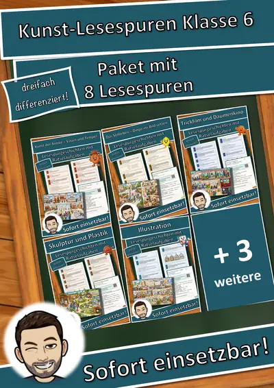

Materialpaket Lesespurgeschichten Hauswirtschaft Klasse 6: 4 Lesespuren mit Rätselaufgaben, dreifach differenziert
4 Lesespuren für die 6. Klasse – im Paket günstiger als einzeln
Mit diesem Materialpaket bekommst du 4 meiner Lesespurgeschichten für die 6. Klasse aus dem Fach Hauswirtschaft in einem Download. Alle Lesespuren sind sofort einsetzbar, dreifach differenziert (leicht ★ / mittel ★★ / schwer ★★★) und jeweils in Farbe und Schwarz-Weiß enthalten. So arbeitet deine ganze Klasse am selben Thema, und jedes Kind liest auf seinem Niveau.
Preisvorteil: Einzeln gekauft kosten die 4 Materialien regulär zusammen 15,96 €. Im Paket zahlst du nur 7,98 € und sparst damit rund 50 %.Die 4 Materialien im Paket
Die Ernährungspyramide (Klasse 6 – Hauswirtschaft): Hauswirtschaftslehrerin Frau Keller geht mit Lea und Finn die große Pyramidentafel einer Schulküche Stufe für Stufe durch – von der Getränkestufe über Gemüse-, Obst-, Getreide-, Milch-, Eiweiß- und Fettstufe bis zur Süßigkeitenspitze.
Den Tisch festlich decken – Gedeck, Tischsitten und Tischschmuck (Klasse 6 – Hauswirtschaft): Die passende Lesespur für Hauswirtschaft, Ernährung und Gesundheit, Alltagskompetenz und Wirtschaft-Arbeit-Technik in Klasse 6 (auch 5 und 7) – ideal vor Adventsessen, Klassenfeier oder Kochprojekt, für Stationenlernen oder Vertretungsstunden.
Bärlauch – Frühlingskraut mit giftigen Doppelgängern (Klasse 6 – Hauswirtschaft): Lina und Tarek sammeln mit Frau Kowalski Bärlauch – Tarek ist sich bei jedem Blatt sicher, Lina prüft lieber genau.
Hefeteig – Ofen-Krapfen für die Faschingsfeier (Klasse 6 – Hauswirtschaft): Die passende Lesespur für Hauswirtschaft in Klasse 6 (auch 5 und 7) – ideal in der Faschingszeit zu Nahrungszubereitung, Arbeitsschritten und Hygiene, für Stationenlernen oder Vertretungsstunden.
Lehrplanbezug (LehrplanPLUS Bayern, Mittelschule, Jahrgangsstufe 6)Deutsch – Lesen, mit Texten und weiteren Medien umgehen: Die Kinder lesen sinnentnehmend, wenden Lesestrategien an und entnehmen gezielt Informationen, denn nur wer genau liest, findet die nächste Station.
Deutsch – Sprechen und Zuhören: Das Hörverstehen per QR-Code schult konzentriertes Zuhören; Gespräche über Bräuche und Sachthemen fördern das Erzählen und Begründen.
Deutsch – Schreiben: Die Kinder beantworten Fragen schriftlich, füllen Steckbriefe aus und notieren Lösungen.
Hauswirtschaft: Die Ernährungspyramide, Den Tisch festlich decken – Gedeck, Tischsitten und Tischschmuck, Bärlauch – Frühlingskraut mit giftigen Doppelgängern, Hefeteig – Ofen-Krapfen für die FaschingsfeierSo funktioniert eine Lesespur
Die Kinder lesen ab START einen kurzen Abschnitt. Am Ende verrät ein Hinweis den nächsten Ort, den sie auf dem farbigen Plan suchen. Dort lesen sie weiter. An jeder richtigen Station sammeln sie einen Buchstaben, und eingeplante Sackgassen dienen der Selbstkontrolle. Am Ende ergeben die umgestellten Buchstaben ein geheimes Lösungswort.
Das ist in jeder Lesespur enthalten
Lesespurgeschichte in 3 Niveaus (leicht ★, mittel ★★, schwer ★★★)farbiger Plan als Suchkarte
Rätselaufgaben auf dem Weg, z. B. Zuordnen, Quiz, Rechenaufgabe und Steckbrief
Hörverstehen mit QR-Code zum Hörtext
Rätselseite mit Wörter-Suchsel und Wissensfragen
Ausmalbild zum Themaausführliches Lösungsblatt für die Lehrkraftalles zusätzlich als drucksparende Schwarz-Weiß-Variante
Insgesamt umfasst das Paket 192 Seiten.
Einsatzmöglichkeiten
Alle Materialien passen das ganze Schuljahr über, auch als Thema der Woche oder Werkstatt. Du kannst sie im Stationenlernen, in Freiarbeit und Wochenplan, in der Leseförderung und in Förderstunden einsetzen. In Vertretungsstunden funktionieren sie ohne Vorbereitung. Sie eignen sich für alle Schulen in allen Bundesländern.
Viel Freude mit deiner Klasse wünscht dir Snice!
Ähnliche Materialien

Materialpaket Lesespurgeschichten Hauswirtschaft Klasse 7: 3 Lesespuren mit Rätselaufgaben, dreifach differenziert

Vorräte wie zu Omas Zeiten – Einkochen, Trocknen, Einlegen – Lesespurgeschichte mit Rätselaufgaben (Klasse 3)

Materialpaket Lesespurgeschichten Sport Klasse 6: 5 Lesespuren mit Rätselaufgaben, dreifach differenziert

Materialpaket Lesespurgeschichten Musik Klasse 6: 8 Lesespuren mit Rätselaufgaben, dreifach differenziert

Materialpaket Lesespurgeschichten Kunst Klasse 6: 8 Lesespuren mit Rätselaufgaben, dreifach differenziert

Materialpaket Lesespurgeschichten Geschichte Klasse 6: 13 Lesespuren mit Rätselaufgaben, dreifach differenziert

Materialpaket Lesespurgeschichten Biologie Klasse 6: 4 Lesespuren mit Rätselaufgaben, dreifach differenziert